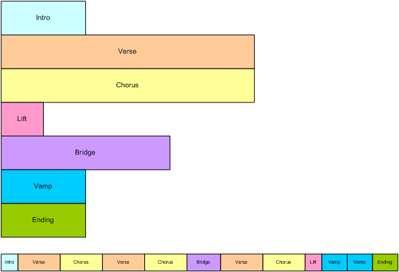
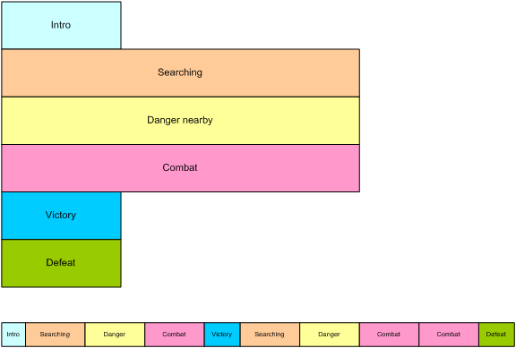
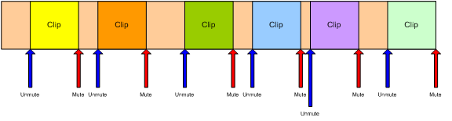
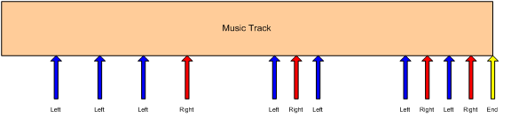
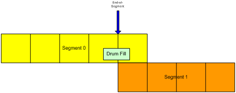
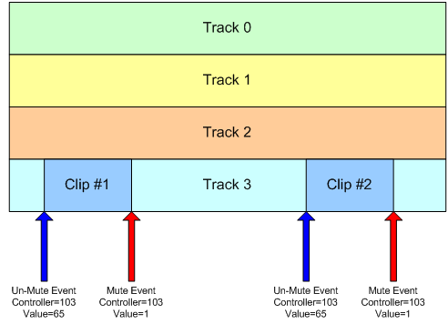

Copyright (C) 2009 The Android Open Source Project
Licensed under the Apache License, Version 2.0 (the "License");
you may not use this file except in compliance with the License.
You may obtain a copy of the License at
http://www.apache.org/licenses/LICENSE-2.0
Unless required by applicable law or agreed to in writing, software
distributed under the License is distributed on an "AS IS" BASIS,
WITHOUT WARRANTIES OR CONDITIONS OF ANY KIND, either express or implied.
See the License for the specific language governing permissions and
limitations under the License.
JET Interactive Music Engine
Vrs 2.0
Authored by SONiVOX
Copyright 2009 Sonic Network, Inc.
This document contains programmer guidelines for the SONiVOX
JET Interactive Music System. JET is an interactive music player for small
embedded devices, including the Google Android platform. It allows applications
to include interactive music soundtracks, in
JET works in conjunction with SONiVOX’s Embedded Audio
Synthesizer (EAS) which is the
The programmer of a JET application will want to work closely with the content author in designing how real-time application events and music will interactively work together. Once decided, the content author will create the content and ultimately save a .jet file for the programmer to include in the application.
Please see “JET Creator User Documentation” for additional information on authoring JET content.
It is important to use a common set of terms to minimize confusion.
Since JET uses
Channel: MIDI data
associated with a specific
Controller: A
DAW: Digital Audio
Workstation. A common term for
EAS: Embedded
JET: Jet Interactive Engine. The name of the SONiVOX JET interactive music engine.
Segment: A musical
section such as a chorus or verse that is a component of the overall
composition. In JET, a segment can be an entire MIDI file or a derived from a
portion of a
SMF-0: Standard
MIDI File Type 0, a MIDI file that contains a single track, but may be made up
of multiple channels of
SMF-1: Standard
MIDI File Type 1, a MIDI file that contains a one more tracks, and each track
may in turn be made up of one or more channels of
Track: A single
track in a DAW containing a timed sequence of
Interactive music can be defined as music that changes in real-time according to non-predictable events such as user interaction or game play events. In this way, interactive music is much more engaging as it has the ability to match the energy and mood of a game much closer than a pre-composed composition that never changes. In some applications and games, interactive music is central to the game play. Guitar Hero is one such popular game. When the end user successfully ‘captures’ the musical notes coming down the fret board, the music adapts itself and simultaneously keeps score of successes and failures. JET allows for these types of music driven games as well.
There are several methods for making and controlling interactive music and JET is one such method. This section describes the features of JET and how they might be used in a game or software application. It also describes how JET can be used to save memory in small footprint devices such as Android enabled mobile handsets.
JET supports a flexible music format that can be used to create extended musical sequences with a minimal amount of data. A musical composition is broken up into segments that can be sequenced to create a longer piece. The sequencing can be fixed at the time the music file is authored, or it can be created dynamically under program control.

Figure 1: Linear Music Piece
This diagram shows how musical segments are stored. Each
segment is authored as a separate
The bottom part of the diagram shows how the musical segments can be recombined to create a linear music piece. In this example, the bridge might end with a half-step key modulation and the remaining segments could be transposed up a half-step to match.

Figure 2: Non-linear music piece
In this diagram, we see a non-linear music piece. The scenario is a first-person-shooter (FPS) and JET is providing the background music. The intro plays as the level is loading and then transitions under program control to the Searching segment. This segment is repeated indefinitely, perhaps with small variations (using the mute/un-mute feature) until activity in the game dictates a change.
As the player nears a monster lair, the program starts a synchronized transition to the Danger segment, increasing the tension level in the audio. As the player draws closer to the lair, additional tracks are un-muted to increase the tension.
As the player enters into combat with the monster, the program starts a synchronized transition to the Combat segment. The segment repeats indefinitely as the combat continues. A Bonus Hit temporarily un-mutes a decorative track that notifies the player of a successful attack, and similarly, another track is temporarily un-muted to signify when the player receives Special Damage.
At the end of combat, the music transitions to a victory or defeat segment based on the outcome of battle.
JET can also synchronize the muting and un-muting of tracks to events in the music. For example, in the FPS game, it would probably be desirable to place the musical events relating to bonuses and damage as close to the actual game event as possible. However, simply un-muting a track at the moment the game event occurs might result in a music clip starting in the middle. Alternatively, a clip could be started from the beginning, but then it wouldn’t be synchronized with the other music tracks.
However, with the JET sync engine, a clip can be started at
the next opportune moment and maintain synchronization. This can be
accomplished by placing a number of short music clips on a decorative track. A

Figure 3: Synchronized Mute/Unmute
JET provides an audio synchronization API that allows game
play to be synchronized to events in the audio. The mechanism relies on data
embedded in the

Figure 4: Music Game with
Synchronization
The arrows represent events in the music sequence where game events need to be synchronized. In this case, the blue arrow represents a time where the player is supposed to press the left button, and the red arrow is for the right button. The yellow arrow tells the game engine that the sequence is complete. The player is allowed a certain time window before and after the event to press the appropriate key.
If an event is received and the player has not pressed a button, a timer is set to half the length of the window. If the player presses the button before the timer expires, the game registers a success, and if not, the game registers a failure.
If the player presses the button before the event is received, a timer is set to half the length of the window. If an event is received before the timer expires, the game registers a success, and if not, the game registers a failure. Game play might also include bonuses for getting close to the timing of the actual event.
JET uses the standard EAS library calls to manage multiple
JET uses standard
JET uses
Controllers 80-83 Reserved for use by application
Controller 102 JET event marker
Controller 103 JET clip marker
Controllers 104-119 Reserved for future use
The application may use controllers in this range for its
own purposes. When a controller in this range is encountered, the event is
entered into an event queue that can be queried by the application. Some
possible uses include synchronizing video events with audio and marking a point
in a
Controller 102 is reserved for marking events in the
Normally, JET starts playback of the next segment (or
repeats the current segment) when the
To avoid this problem, the author can place a JET end-of-segment marker (controller=102, value=0) at the point where the segment is to be looped. When the end-of-segment marker is encountered, the next segment will be triggered, or if the current segment is looped, playback will resume at the start of the segment.
The end-of-segment marker can also be used to allow for completion of a musical figure beyond the end of measure that marks the start of the next segment. For example, the content author might create a 4-bar segment with a drum fill that ends on beat 1 of the 5th bar – a bar beyond the natural end of the segment. By placing an end-of-segment marker at the end of the 4th bar, the next segment will be triggered, but the drum fill will continue in parallel with the next segment providing musical continuity.

Figure 5: End-of-segment Marker
Controller 103 is reserved for marking clips in a
For example, to identify a clip with a clip ID of 1, the
author inserts a

Figure 6: Synchronized Clip
In the figure above, if the JET_TriggerClip() function is called prior to the first controller event, Track 3 will be un-muted when the first controller event occurs, the first clip will play, and the track will be muted when the second controller event occurs. If the JET_TriggerClip() function is called after the first controller event has occurred, Track 3 will be un-muted when the third controller event occurs, the second clip will play, and the track will be muted again when the fourth controller event occurs.
Note: Normally, the track containing the clip is muted by the application when the segment is initially queued by the call to JET_QueueSegment(). If it is not muted, the clip will always play until Jet_TriggerClip() has been called with the clip ID.
The JET library builds on functionality in the EAS library. It is assumed that the reader is familiar with EAS and has implemented basic EAS audio functionality in the application. Specifically, the application must first initialize EAS by calling EAS_Init() and must call EAS_Render() at appropriate times to render audio and stream it to the audio hardware. JET also requires the use of the dynamic memory model which uses malloc() and free() or functional equivalents.
Most JET function calls return an EAS_RESULT type which should be checked against the EAS_SUCCESS return code. Most failures are not fatal, i.e. they will not put the library in a state where it must be re-initialized. However, some failures such as memory allocation or file open/read errors will likely result in the specific open content failing to render.
The JET library is initialized by the JET_Init() function. The application must first call EAS_Init() and then pass the EAS data handle returned by EAS_Init() to the JET_Init() function. Currently, only a single JET application can be active at a time.
The JET_Init function takes 3 arguments: The first is the EAS data handle. The second is a pointer to a configuration structure S_JET_CONFIG and the third is the size of the configuration structure. For most applications, it is sufficient to pass a NULL pointer and size 0 for the configuration data.
However, if desired, the configuration can be modified to
allow the application to monitor
When the JET application terminates, it should call JET_Shutdown() to release the resources allocated by the JET engine. If the application has no other use for the EAS library, it should also call EAS_Shutdown().
To start the JET engine, the content must first be opened with the JET_OpenFile() function. Just as with EAS_OpenFile(), the file locator is an opaque value that is passed to the EAS_HWOpenFile() function. It can either be a pointer to a filename, or a pointer to an in-memory object, depending on the user implementation of file I/O in the eas_host.c or eas_hostmm.c module. Only a single JET content file can be opened at a time.
Once the JET file is opened, the application can begin queuing up segments for playback by calling the JET_QueueSegment() function. Generally, it is advisable to keep a minimum of two segments queued at all times: the currently playing segment plus an additional segment that is ready to start playing when the current segment finishes. However, with proper programming, it is possible to queue up segments using a “just-in-time” technique. This technique typically involves careful placement of application controller events near the end of a segment so that the application is informed when a segment is about to end.
After the segment(s) are queued up, playback can begin. By default, the segments are initialized in a paused state. To start playback, call the JET_Play() function. Playback can be paused again by calling the JET_Pause() function. Once initiated, playback will continue as long as the application continues to queue up new segments before all the segments in the queue are exhausted.
The JET_Status() function can be used to monitor progress. It returns the number of segments queued, repeat count, current segment ID, and play status. By monitor the number of segments queued, the application can determine when it needs to queue another segment and when playback has completed.
When playback has completed and the application is finished with the contents of the currently open file, the application should call JET_CloseFile() to close the file and release any resources associated with the file.
EAS_PUBLIC EAS_RESULT JET_Init (EAS_DATA_HANDLE easHandle, S_JET_CONFIG *pConfig, EAS_INT configSize)
Initializes JET library for use by application. Most application should simply pass a NULL for pConfig and 0 for configSize, which means that only controller events in the application range (80-83) will end up in the application event queue. If desired, the application can instantiate an S_JET_CONFIG data structure and set the controller range to a different range. In this case, the configSize parameter should be set to sizeof(S_JET_CONFIG).
EAS_PUBLIC EAS_RESULT JET_Shutdown (EAS_DATA_HANDLE easHandle)
Releases resources used by the JET library. The application should call this function when it is no longer using the JET library.
EAS_PUBLIC EAS_RESULT JET_OpenFile (EAS_DATA_HANDLE easHandle, EAS_FILE_LOCATOR locator)
Opens a JET content file for playback. Content must be
formatted for use by the JET library, which is typically accomplished with the
jetfile.py script (see “Creating JET Content”). Only a single JET content file
can be opened at a time. However, since JET can contain many
EAS_PUBLIC EAS_RESULT JET_CloseFile (EAS_DATA_HANDLE easHandle)
Closes a JET file and release the resources associated with it.
EAS_PUBLIC EAS_RESULT JET_Status (EAS_DATA_HANDLE easHandle, S_JET_STATUS *pStatus)
Returns the current JET status. The elements of the status data structure are as follows:
typedef struct s_jet_status_tag
{
EAS_INT currentUserID;
EAS_INT segmentRepeatCount;
EAS_INT numQueuedSegments;
EAS_BOOL paused;
} S_JET_STATUS;
currentUserID: An 8-bit value assigned by the application.
segmentRepeatCount: Number of times left to repeat. Zero indicates no repeats, a negative number indicates an infinite number of repeats. Any positive value indicates that the segment will play n+1 times.
numQueuedSegments: Number of segments currently queued to play including the currently playing segment. A value of zero indicates that nothing is playing. Normally, the application will queue a new segment each time the value is 1 so that playback is uninterrupted.
EAS_PUBLIC EAS_RESULT JET_QueueSegment (EAS_DATA_HANDLE easHandle, EAS_INT segmentNum, EAS_INT libNum, EAS_INT repeatCount, EAS_INT transpose, EAS_U32 muteFlags, EAS_U8 userID)
Queues up a JET MIDI segment for playback. The parameters are as follows:
segmentNum: Segment number as identified in the JET content configuration file.
libNum: The library number as specified in the JET content configuration file. Use -1 to select the standard General MIDI library.
repeatCount: The number of times this segment should repeat. Zero indicates no repeat, i.e. play only once. Any positive number indicates to play n+1 times. Set to -1 to repeat indefinitely.
transpose: The amount of pitch transposition. Set to 0 for normal playback. Range is -12 to +12.
muteFlags:
Specific which MIDI tracks (not
userID: 8-bit value specified by the application that uniquely identifies the segment. This value is returned in the JET_Status() function as well as by the application event when an event is detected in a segment. Normally, the application keeps an 8-bit value that is incremented each time a new segment is queued up. This can be used to look up any special characteristics of that track including trigger clips and mute flags.
EAS_PUBLIC EAS_RESULT JET_Play (EAS_DATA_HANDLE easHandle)
Starts playback of the current segment. This function must be called once after the initial segments are queued up to start playback. It is also called after JET_Pause() to resume playback.
EAS_PUBLIC EAS_RESULT JET_Pause (EAS_DATA_HANDLE easHandle)
Pauses playback of the current segment. Call JET_Pause() to resume playback.
EAS_PUBLIC EAS_RESULT JET_SetMuteFlags (EAS_DATA_HANDLE easHandle, EAS_U32 muteFlags, EAS_BOOL sync)
Modifies the mute flags during playback. If the sync parameter is false, the mute flags are updated at the beginning of the next render. This means that any new notes or controller events will be processed during the next audio frame. If the sync parameter is true, the mute flags will be updated at the start of the next segment. If the segment is repeated, the flags will take effect the next time segment is repeated.
EAS_PUBLIC EAS_RESULT JET_SetMuteFlag (EAS_DATA_HANDLE easHandle, EAS_INT trackNum, EAS_BOOL muteFlag, EAS_BOOL sync)
Modifies a mute flag for a single track during playback. If the sync parameter is false, the mute flag is updated at the beginning of the next render. This means that any new notes or controller events will be processed during the next audio frame. If the sync parameter is true, the mute flag will be updated at the start of the next segment. If the segment is repeated, the flag will take effect the next time segment is repeated.
EAS_PUBLIC EAS_RESULT JET_TriggerClip (EAS_DATA_HANDLE easHandle, EAS_INT clipID)
Automatically updates mute flags in sync with the JET Clip Marker (controller 103). The parameter clipID must be in the range of 0-63. After the call to JET_TriggerClip, when JET next encounters a controller event 103 with bits 0-5 of the value equal to clipID and bit 6 set to 1, it will automatically un-mute the track containing the controller event. When JET encounters the complementary controller event 103 with bits 0-5 of the value equal to clipID and bit 6 set to 0, it will mute the track again.
EAS_BOOL JET_GetEvent (EAS_DATA_HANDLE easHandle, EAS_U32 *pEventRaw, S_JET_EVENT *pEvent)
Attempts to read an event from the application event queue, return EAS_TRUE if an event is found and EAS_FALSE if not. If the application passes a valid pointer for pEventRaw, a 32-bit compressed event code is returned. If the application passes a valid pointer for pEvent, the event is parsed into the S_JET_EVENT fields. The application can pass NULL for either parameter and that variable will be ignored. Normally, the application will call JET_GetEvent() repeatedly to retrieve events until it returns EAS_FALSE.
EAS_PUBLIC void JET_ParseEvent (EAS_U32 event, S_JET_EVENT *pEvent)
Parses a 32-bit compressed event code into a data structure. The application passes the event code received from JET_GetEvent(). The parsed event data is returned in the memory pointed to by pEvent.
EAS_RESULT JET_GetAppData (EAS_DATA_HANDLE easHandle, EAS_I32 *pAppDataOffset, EAS_I32 *pAppDataSize)
Returns the offset and size of the JAPP chunk in the JET file. The application can use the file I/O functions in the eas_host module to retrieve application specific data from the file.
JET uses standard MIDI files and DLS files that can be
created with commercially available content tools such as Logic, Cubase,
Digital Performer, or SONAR for
To create JET file use the “JET Creator” desktop application. The JET Creator application is written in Python and includes a full graphical interface. It is available for MAC and PC platforms. See “JET Creator User Manual” for more information.